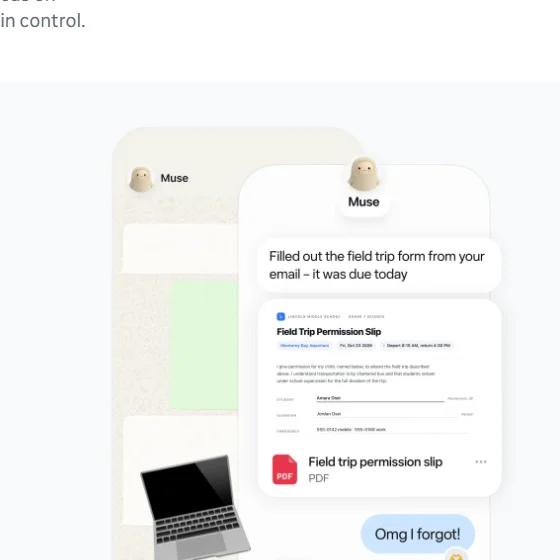

MuseMeta（Meta 超级智能实验室）
Meta 超级智能实验室的第一批产品：面向大众的个人 Agent Muse，每人一台专属云电脑，北美上线一个半月账号破千万；面向开发者的 Muse Code；模型 Muse Spark 已开放权重。
一页结论
- 大众市场的个人 Agent：9 月 8 日发布，帮人处理邮件、日程、购物、旅行、预算等生活事务；10 月 Meta 财报称北美设置账号超 1,000 万，约四分之一每天使用S2S4
- 每人一台云电脑：每位用户有一台专属的隔离 Linux 虚拟机，Agent、浏览器和凭证都在里面；所有对外操作要经过 Agent 无法绕过的 Sentinel 审批S2
- 安全设计是卖点：Agent 看不到真实凭证，购物时生成一次性卡号，发邮件、付款前需要用户确认；公开悬赏最高 30 万美元S1S2
- 开发者线：Muse Code：8 月 5 日发布的终端编程 Agent，基于 Muse Spark 模型S5S6
- 成本是最大挑战：扎克伯格称 Muse 计算消耗大，预计一年内成本效率提升 10 倍以上；Meta 全年资本开支指引为 1,350 亿至 1,450 亿美元S4
01公司介绍
02公司战略
Meta 的目标是“个人超级智能”：先做一个真正替人办事的个人 Agent，用 Meta 的社交与通讯应用分发。
- 面向大众而非开发者：Muse 主打生活与小生意，营销上邀请名人展示自己的 MuseS1
- 模型为 Agent 训练：重点训练零样本工具调用（命令行与技能）、长上下文、长任务指令遵循、对提示注入的天然警觉和多 Agent 协作S2
- 开放权重换生态：10 月开放 Muse Spark Open，在 Hugging Face、AWS、Google Cloud、微软平台均可下载S7
- 扩到小生意：推出 Muse for Small Business 技能与连接器S1
03产品定位
| 项目 | 内容 |
|---|---|
| 一句话定位 | “你的个人 AI 智能体”：了解你和你的目标，替你处理生活各方面的琐事S1 |
| 目标用户 | 大众消费者（首发美国与加拿大），以及小生意主S4S1 |
| 核心场景 | 邮件与日程、预订、预算、旅行、购物、健康、家庭事务S1 |
| 开发者产品 | Muse Code：终端里的编程 Agent，面向大型代码库S6 |

04产品与主要功能
Muse 的特点是“生活场景 + 安全优先”：功能上与 Grok Bot、ChatGPT 的 dot 同属常驻云端的个人 Agent，差异在于消费级的安全设计与 Meta 应用的连接。
产品架构
交互入口
iOS / Android App网页macOS 桌面端（可用本地文件、应用与浏览器标签）Muse Code（终端）
Agent 层
个人 Agent（了解用户目标）子 Agent 群自建工具与技能定时任务（cron）
连接器
邮件、日历汽车、家居等第三方系统其他 Meta 应用小生意技能与连接器
模型层
Muse Spark 1.3 / Muse WonderMuse Spark Open（开放权重）S7
运行环境
Muse Secure VM：每人一台隔离的 Linux 虚拟机，含浏览器、存储与算力客户端通过安全传输直连虚拟机
安全设计Sentinel 审批所有对外操作Agent 看不到真实凭证一次性支付卡号关键操作需用户确认完整审计记录
核心功能
截图来自 Muse 官网，2026-11-02。
12 项能力评估
编辑器 / IDE无或未说明Muse 不涉及；编程交给 Muse Code
代码审查无或未说明未见相关产品
多模型可选有限只用 Meta 自家模型
05商业模式
Muse 采用免费加订阅的模式；但 Meta 的主要收入仍是广告，Muse 目前是重投入期。
| 档位 | 价格 | 说明 |
|---|---|---|
| 免费版 | $0 | 官网 FAQ 设有“Muse 免费吗”条目S1 |
| Power | $20/月 | 第三方报道，未在官网核实S3 |
| Maximum | $100/月 | 第三方报道，未在官网核实S3 |
| Muse Code | 按月订阅 | Muse Wonder Full 仅向 Muse Code 订阅者开放S7 |
经济性：扎克伯格表示 Muse 需要大量算力，服务成本会随用户增长上升，盈利取决于收入能否跟上规模；Meta 预计一年内把 Muse 的成本效率提高 10 倍以上S4。三季度资本开支约 349 亿美元，当季自由现金流为负S4。
06上下游与渠道
上游：模型与算力
Meta 超级智能实验室自研 Muse 模型Meta 自建数据中心（全年资本开支 1,350 亿至 1,450 亿美元）S4
Muse 产品
个人 Agent、Muse Code
渠道
下游客户
美国与加拿大的大众用户小生意主S1
07市场表现
08用户口碑
公开评价以媒体与开发者评测为主（B 级来源）。
09安全合规
10近期动态
11潜在风险分析意见
| 风险 | 表现 | 可能程度 |
|---|---|---|
| 算力成本 | 每人一台云虚拟机、持续运行，服务成本高，盈利依赖成本快速下降S4 | 高 |
| 隐私信任 | Agent 读取邮件、日程、支付等敏感数据，Meta 的隐私口碑是天然障碍（分析意见） | 高 |
| 地域限制 | 首发仅美国与加拿大S4 | 中 |
| 留存 | 设置账号的用户中每天使用的约四分之一，仍需证明长期价值S4 | 中 |
| 编程线落后 | Muse Code 面对 Claude Code、Codex 的领先优势S7 | 中 |
“可能程度”为基于现有公开信息的判断，不是量化预测。
12综合结论分析意见
优势
- Meta 的海量用户与分发入口
- 公开透明的安全架构
- 自研模型并开放权重
劣势
- 隐私口碑
- 编程与企业场景较弱
机会
- 生活场景的个人 Agent 尚无绝对领先者
- 小生意市场
威胁
- ChatGPT dot、Gemini Spark、Grok Bot 等同类产品
- 高昂的服务成本
对 AI 产品团队的启示
- 面向大众的 Agent，安全设计就是产品：看不到凭证、一次性卡号、关键操作确认，这些设计直接决定普通人敢不敢把邮箱和信用卡交给 Agent。
- 假设 Agent 会被攻击：Muse 的做法是默认 Agent 可能受到提示注入，用架构把损失限制住，而不是只靠模型变聪明。
- 个人 Agent 的单位经济要先算清：每人一台云电脑很好用，但成本高；规模越大越要关注单用户成本。
- 激活不等于留存：1,000 万账号中约四分之一每天使用，Agent 产品要设计能让用户每天回来的场景。
信息缺口
以下信息未找到可靠的公开来源，本报告不做推测。
- Muse 官方定价（订阅价格来自第三方报道）
- Muse Code 的用户数与订阅价格
- Muse 面向更多国家开放的时间
- Muse 相关收入
来源
A 官方 · B 权威媒体或第三方 · C 社区（仅用于口碑与线索）。访问日期均为 2026-11-02。
- S1 · AMuse 官网Meta
- S2 · AHow We Built Safety Into MuseMeta 研究博客 · 2026-09-08
- S3 · BMeta Introduces Muse, a Personal AI Agent That Runs on Its Own Dedicated Secure Cloud ComputerMarkTechPost · 2026-09-08
- S4 · BMeta Q3 revenue tops estimates and Zuckerberg says Muse accounts have topped 10 million美联社（经 News4JAX 转载） · 2026-10-21
- S5 · BMeta debuts Muse Code to take on Anthropic and OpenAICNBC · 2026-08-05
- S6 · BMeta Superintelligence Labs Releases Muse CodeMarkTechPost · 2026-08-05
- S7 · BMeta Muse Spark OpenThe New Stack · 2026-10
- S8 · BMeta Superintelligence LabsWikipedia